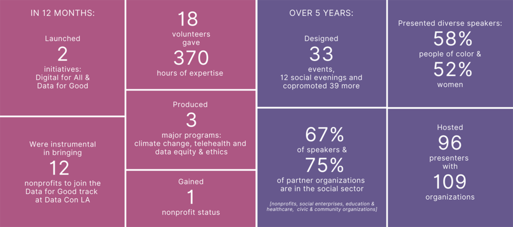

Support and inspire changes in the greater LA with tech initiatives
Our Impact
Our Project
OUR DATA FOR GOOD EFFORTS are rooted in the Black Lives Matter movement as we sought over the summer to be able to support and engage. We’ve been focusing efforts on data and algorithmic biases as they support racism and advocating for actionable solutions.
DIGITAL INCLUSION and the digital divide – clearly now more urgent than ever due to the pandemic – has been part of LA Tech4Good’s work for five years. – In 2017 we started with The Digital Divide. Or No, Everyone is NOT Online to draw attention to the issue. – Throughout 2018 we hosted a series of events with nonprofits working in Latinx communities to both outline the tech landscape and promote critical efforts in creating tech inclusion. – We continue to amplify this work through our Digital for All initiative in response to Covid, and hosted a June virtual event Breaking the Telehealth Divide.